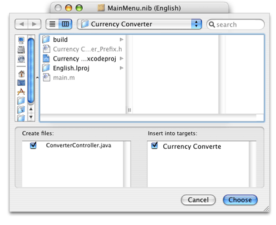
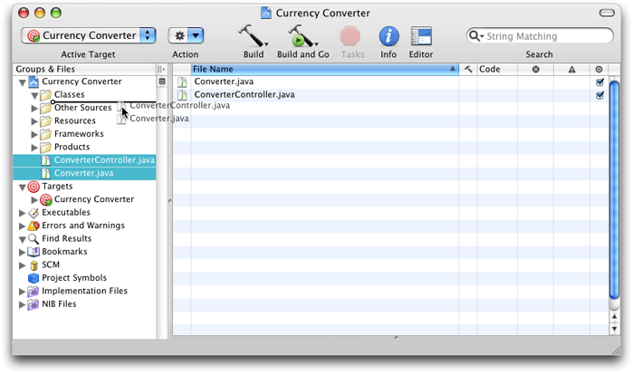

Legacy Document
Important: The Java API for Cocoa is deprecated in Mac OS X version 10.4 and later. You should use the Objective-C API instead. For a tutorial on using Cocoa with Objective-C, see Cocoa Application Tutorial.
Implementing Currency Converter
In Creating the Currency Converter Project and User Interface, you created the skeleton and the interface for the Currency Converter application. This chapter guides you through defining the custom behavior of the application and in the process teaches you the final steps essential to implementing a Cocoa application.
In this section:
Generate the Source Files
Place the Implementation Files in the Appropriate Group
Implement the Currency Converter Classes
Generate the Source Files
To generate the source files for the Currency Converter application:
In the Classes pane in the nib file window, select the ConverterController class.
Choose Classes > Create Files for ConverterController.
Make sure
ConverterController.javain “Create files” and Currency Converter in “Insert into targets” are selected.If Currency Converter in “Insert into targets” is not selected, you may not have saved the nib file earlier. Save the file and go to step 2.
Click Choose.
Repeat steps 1 through 4 for the Converter class.
Save the nib file.
Quit Interface Builder.
Place the Implementation Files in the Appropriate Group
When Interface Builder adds the .java files to the Currency Converter project, it puts them into the main Groups & Files list. Although this location is perfectly acceptable—the build system doesn’t care where the files are—they are classes of your project and should be organized accordingly. To put these files in the Classes subgroup:
In the project window in Xcode, select the two files in the project group in the Groups & Files list.
Drag the files to the Classes group.

Implement the Currency Converter Classes
The Converter class needs a method to perform the conversion computation. To add this method to Converter.java:
In the Groups & Files list in the project window, select the Classes group.
In the detail view, double-click
Converter.java. Xcode opens the file in an editor window.Insert the tagged lines in Listing 2-1 into the
Converter.javafile.
Listing 2-1 Implementation of the Converter class
/* Converter */ |
import com.apple.cocoa.foundation.*; |
import com.apple.cocoa.application.*; |
public class Converter { |
public float convertDollars(float dollars, float rate) { // 1 |
return dollars * rate; // 2 |
} // 3 |
} |
The convertDollars method multiplies the two arguments and returns the result.
Now, update the empty implementation of the convert method in ConverterController.java that Interface Builder generated for you by changing or adding the tagged lines in Listing 2-2 to the file.
Listing 2-2 Implementation of the ConverterController class
import com.apple.cocoa.foundation.*; |
import com.apple.cocoa.application.*; |
public class ConverterController { |
public NSTextField amountField; /* IBOutlet */ |
public Converter converter; /* IBOutlet */ // 1 |
public NSTextField dollarField; /* IBOutlet */ |
public NSTextField rateField; /* IBOutlet */ |
public void convert(Object sender) { /* IBAction */ |
float dollars, rate, amount; // 2 |
dollars = dollarField.floatValue(); // 3 |
rate = rateField.floatValue(); // 4 |
amount = converter.convertDollars(dollars, rate); // 5 |
amountField.setFloatValue(amount); // 6 |
rateField.selectText(this); // 7 |
} |
} |
Notice that line 1 changes the type of the converter instance variable from Object to Converter. This is possible here because the Converter class is now defined in the project (when the ConverterController class was defined in Interface Builder, the Converter class didn’t exist). You could have also done this by explicitly setting the type of the converter outlet to Converter within Interface Builder after defining the Converter class. This is an important step because leaving converter’s type as Object prevents the program from accessing the methods that the Converter class implements. (The Objective-C language doesn’t have this limitation.)
The convert method does the following:
Gets the floating-point values typed into the Exchange Rate and Dollars to Convert text fields (lines 3 and 4).
Invokes the
convertDollarsmethod and stores the result (line 5).Uses
setFloatValueto write the returned value in the Amount in Other Currency text field (line (line 6).Invokes
selectTexton the rate field (line 7). This selects any text in the text field or, if there is no text, places the insertion point so the user can enter text into the text field.
You’ve now completed the implementation of Currency Converter. Are you surprised how little code you had to write, given that your application now has a fully functional converting system and a beautiful Aqua user interface? Building Currency Converter shows how to build and run the application.
© 2002, 2006 Apple Computer, Inc. All Rights Reserved. (Last updated: 2006-10-03)